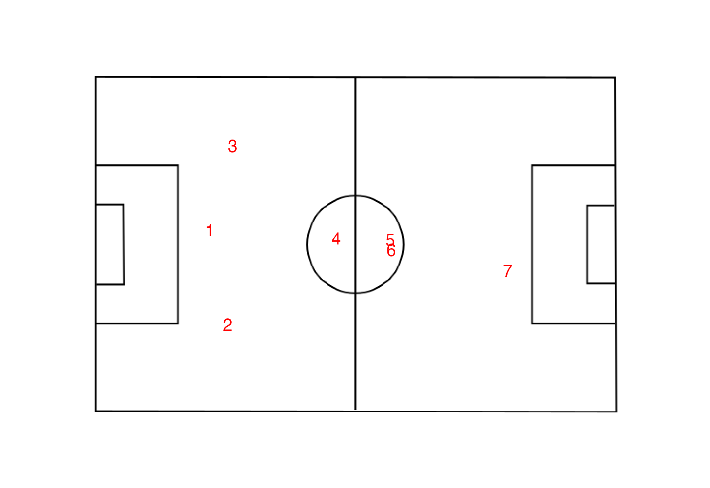
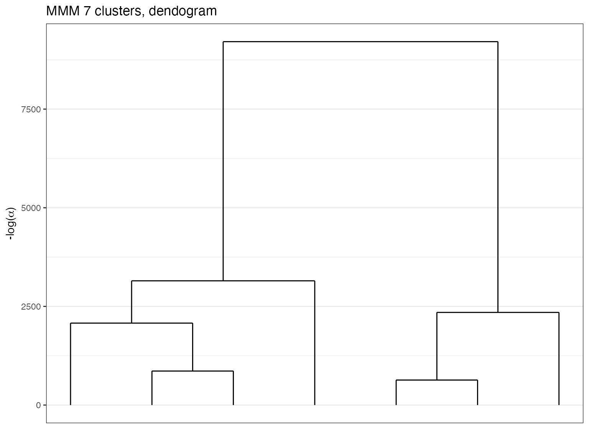

Loads packages.
library(greed)
library(dplyr)
#>
#> Attaching package: 'dplyr'
#> The following objects are masked from 'package:stats':
#>
#> filter, lag
#> The following objects are masked from 'package:base':
#>
#> intersect, setdiff, setequal, union
library(tidyr)
library(ggpubr)
#> Loading required package: ggplot2
library(mclust)
#> Package 'mclust' version 5.4.8
#> Type 'citation("mclust")' for citing this R package in publications.
library(ggplot2)
set.seed(2134)Mixed data clustering
Gaussian Mixture Models (GMMs) are treated in greed in a Bayesian fashion with typical conjugate priors. \[ \begin{align} \pi&\sim Dirichlet(\alpha)\\ Z_i&\sim \mathcal{M}(1,\pi)\\ V_k&\sim \mathcal{W}(\varepsilon^{-1},n_0)\\ \mu_k&\sim \mathcal{N}(\mu,(\tau V_k)^{-1})\\ X_{i}^{cont}|Z_{ik}=1 &\sim \mathcal{N}(\mu_k,V_{k}^{-1})\\ X_{i}^{discr}|Z_{ik}=1 &\sim \mathcal{C}(\pi_k)\\ \end{align} \]
data(Fifa)
X=Fifa[,-c(1,2)] %>% filter(value_eur>1000000) %>% select(-value_eur,-GK)
library(future)
plan(multisession)
sol = greed(X,model=new("mmm"))
#> ------- MMM model fitting ------
#> ################# Generation 1: best solution with an ICL of -201212 and 9 clusters #################
#> ################# Generation 2: best solution with an ICL of -201142 and 8 clusters #################
#> ################# Generation 3: best solution with an ICL of -201115 and 7 clusters #################
#> ################# Generation 4: best solution with an ICL of -201096 and 7 clusters #################
#> ################# Generation 5: best solution with an ICL of -201096 and 7 clusters #################
#> postprocessing
#> ------- Final clustering -------
#> ICL clustering with a MMM model, 7 clusters and an icl of -201096.
f=plot(sol)
data("Fifa_positions")
params=coef(sol)
pos_clust = data.frame(do.call(rbind,lapply(1:sol@K,\(k){
sapply(params$Thetak[2:length(params$Thetak)],\(x){1-x[k,1]})
})))
pos_clust$cluster=factor(1:sol@K)
pos_clust_long = pos_clust %>% pivot_longer(cols = -ncol(pos_clust),names_to = "position",values_to = "p") %>%
mutate(position=tolower(position)) %>%
left_join(Fifa_positions$positions,by=c("position"="team_position"))
pos_clust_mean = pos_clust_long %>% group_by(cluster) %>% summarise(x=weighted.mean(x,p),y=weighted.mean(y,p))
library(ggpubr)
ggplot(pos_clust_mean)+background_image(Fifa_positions$bg_img)+geom_text(aes(x=x,y=y,label=cluster),size=5,col="red")+
coord_fixed(ratio=1)+
scale_x_continuous(limits=c(0,203.2),expand = c(0,1))+
scale_y_continuous(limits=c(0,101.6),expand = c(0,1))+theme_void()
On this more complex dataset, we may look at the dendrogram which is more interesting with the complex structure of these data.
plot(sol,type='tree')
Finally if we look at the clusters centers, they look coherent and thanks to the hierarchical ordering performed by greed are also well organized.